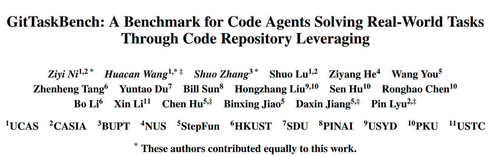
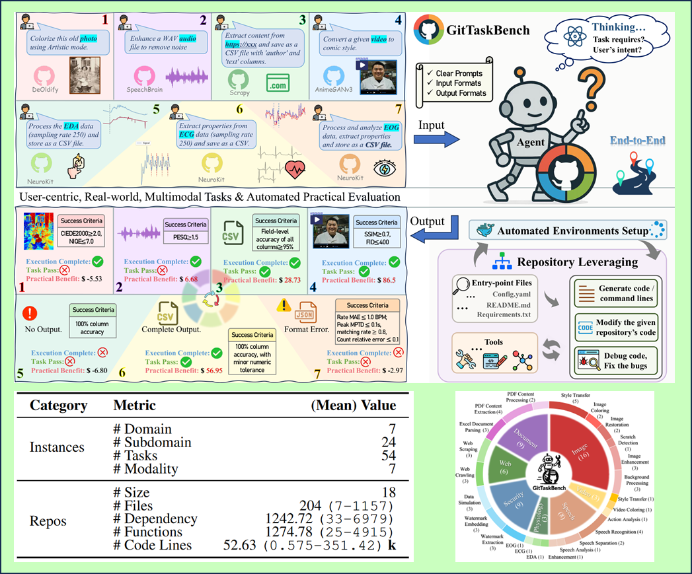

CodeAgent 2.0 Era Begins｜GitTaskBench: Redefining the Standard for Practical Delivery of Code Agents!
Introduction
Have you ever wondered: despite models scoring high on various leaderboards, why does the real-world experience often fall short?
We observed that most AI coding benchmarks remain focused on “code generation” and “closed-form questions,” while neglecting the real needs of developers such as environment setup, dependency handling, and cross-repository resource utilization. Today’s benchmarks, limited to problem-solving, are no longer sufficient to measure the true effectiveness of code agents.
To break through these limitations, researchers from CAS, Peking University, HKUST, USTC, NUS, together with the open-source research organization QuantaAlpha and the StepStar team led by Jiang Daxin, introduced and open-sourced a repo-level benchmark paradigm — GitTaskBench.
Key highlights:
- Evaluates the full-chain capability of agents: from repository understanding → environment setup → incremental development/bug fixing → project-level delivery.
- For the first time, incorporates the "economic value" of the framework × model combination into evaluation metrics, offering new insights for academia, industry, and entrepreneurship.

📄 Paper:
GitTaskBench: A Benchmark for Code Agents Solving Real-World Tasks Through Code Repository Leveraging
📂 GitHub:https://github.com/QuantaAlpha/GitTaskBench
GitTaskBench Overview
The open-source version covers:
-
7 modalities × 7 domains × 24 subdomains
-
54 real-world tasks
Repository stats:
-
18 backend repos
- Avg. 204 files, 1,274.78 functions, 52.63k lines of code
- Avg. 1,242.72 file references/dependencies
Each task comes with:
- A full GitHub repository
- Natural language instructions
- Explicit input/output formats
- Task-specific automated evaluation scripts
The following image shows the domain and modal distribution of GitTaskBench, including the corresponding quantity.
Constructing End-to-End Repo-Level Evaluation
GitTaskBench evaluates code agents across three key dimensions:
- Comprehensive Code Control: Reading docs, resolving dependencies, generating/modifying/debugging code.
- Task-Oriented Execution: Multi-round reasoning & tool use, delivering outputs aligned with task goals, leveraging repos but not limited to them.
- Autonomous Environment Setup: Independent installation and dependency resolution without prebuilt Docker images.
The following figure provides an overview of the entire process from repository collection to task evaluation:

Four Phases of Benchmark Construction
- Repository Selection
- Define task scope via literature review, LLM retrieval, and expert consultation.
- Select Python repos with ⭐≥50, recent activity (within 5 years), usable dependencies, and easy configuration.
- Manual verification of stars, forks, license, and commit history ensures reliability.
- Completeness Verification
- Includes necessary dependency/config files, datasets, and pretrained models.
- Strict reproduction to ensure 100% human replicability.
- Any gated resources are documented in README for full self-containment.
- Execution Framework Design
- Unified task definitions and I/O specifications.
- Agents must perform: repo understanding → code generation/modification → environment setup → execution.
- Automated Evaluation
- Custom test scripts validated by humans.
- Single-command execution yields success/failure + detailed reasons.
- Enables aggregated metric reporting.
Practical Economic Feasibility Analysis
- GitTaskBench introduces the "cost-effectiveness" concept with three metrics:
- ECR (Execution Completion Rate): Can the repo run successfully and produce valid, parseable outputs?
- TPR (Task Pass Rate): Task-specific success thresholds (e.g., PESQ ≥2.0 / SNR ≥15dB for speech enhancement; SSIM/FID for image tasks).
- α Value (Alpha Practical Value): Average net benefit of the agent when executing tasks.
- Specific Formula:

Where:
-
n: number of tasks
-
T: success flag (1 = success, 0 = fail, aligned with ECR)
-
MV: market value estimate if done by a human
-
Q: quality coefficient (0–1), closeness to human-level output
-
C: total execution cost (approximated as API costs)
This metric reflects whether it’s “worthwhile to outsource this task to the agent”, quantifying cost savings, efficiency gains, and market value of automation.
Results: Framework × Model Coupling
Experiments adapting mainstream frameworks and models reveal:
-
OpenHands + Claude 3.7 achieved the best overall results:
-
GPT-4.1 emerged as the cost-effectiveness champion:
- Comparable success rates at 1/10–1/30 the cost of Claude (under OpenHands).
- Consistently strong performance in SWE-Agent tasks with lower cost.
-
Qwen3-32B (think mode): Achieved ~60% of Claude 3.5's performance with fewer tokens.
-
Task preference trends:
- Stable on text/office tasks.
- More difficult on multi-modal and compute-heavy tasks (e.g., image restoration requiring many dependencies/weights).
More detailed analysis of the performance of different frameworks and models in various task domains:

In addition, the real-world value beyond capabilities also deserves attention.：
Market Value Sensitivity
- For high-MV repos (e.g., VideoPose3D, FunASR, NeuroKit), successful agent completion yields large positive α.
- For low-MV image tasks (MV ≈ $5–10), high execution cost (> $1–2) often leads to negative α.
- This highlights that cost control is critical in low-market-value tasks.
Model-Specific Findings
-
DeepSeek V3: Highest net returns and best cost-effectiveness across most repos.
-
GPT-4.1: Most stable and robust across scenarios, with minimal performance drops.
-
Claude 3.5: Strong in information extraction, but cost-sensitive in compute-heavy vision tasks.
Conclusion
The findings suggest that choosing the right framework × model requires a tri-factor trade-off: effectiveness, cost, and API consumption.
- Claude excels in coding tasks.
- GPT-4.1 offers greater stability and cost savings in many scenarios.
- Open-source models can achieve better α in specific repos.
Broader Applications of GitTaskBench
-
Agent Infrastructure: Regression testing for base comparisons, workflow improvements (environment mgmt, dependency repair, entry detection, execution planning).
-
Application Evaluation: Multi-metric (ECR/TPR/α) evidence for PoC or production deployment decisions.
-
Task Design Library: Ready-to-use evaluation cases across image, speech, physiological signals, office docs, and web crawling.
About QuantaAlpha
Founded in April 2025, QuantaAlpha is composed of professors, postdocs, PhDs, and master's students from Tsinghua, Peking University, CAS, CMU, HKUST, and more.
Our mission: to explore the “quantum” of intelligence and lead the “alpha” frontier of agent research — from CodeAgents to self-evolving agents, and to domain-specialized agents in finance and beyond, aiming to reshape the boundaries of AI. 🌟
✨ In 2025, we will continue producing high-quality research in:
-
CodeAgent (end-to-end autonomous execution of real-world tasks)
-
DeepResearch
-
Agentic Reasoning / Agentic RL
-
Self-evolution & collaborative learning
🌐 Team homepage:
https://quantaalpha.github.io/
|